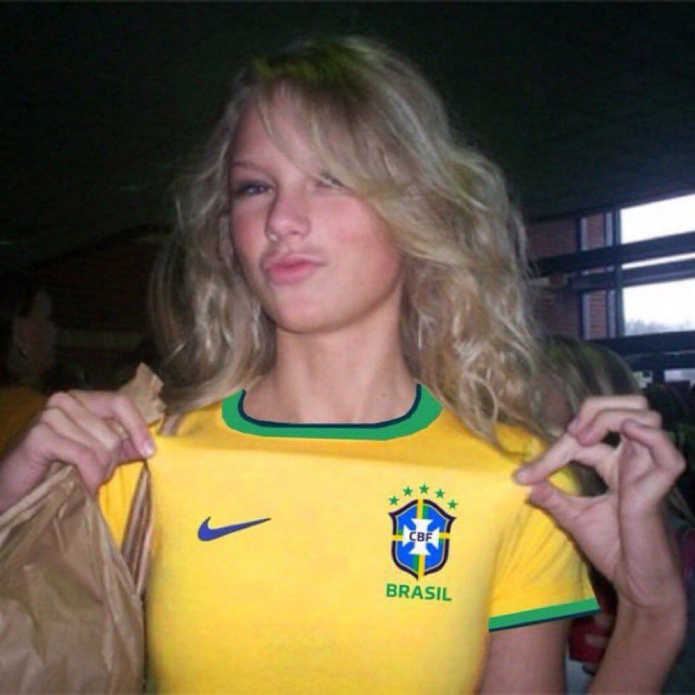
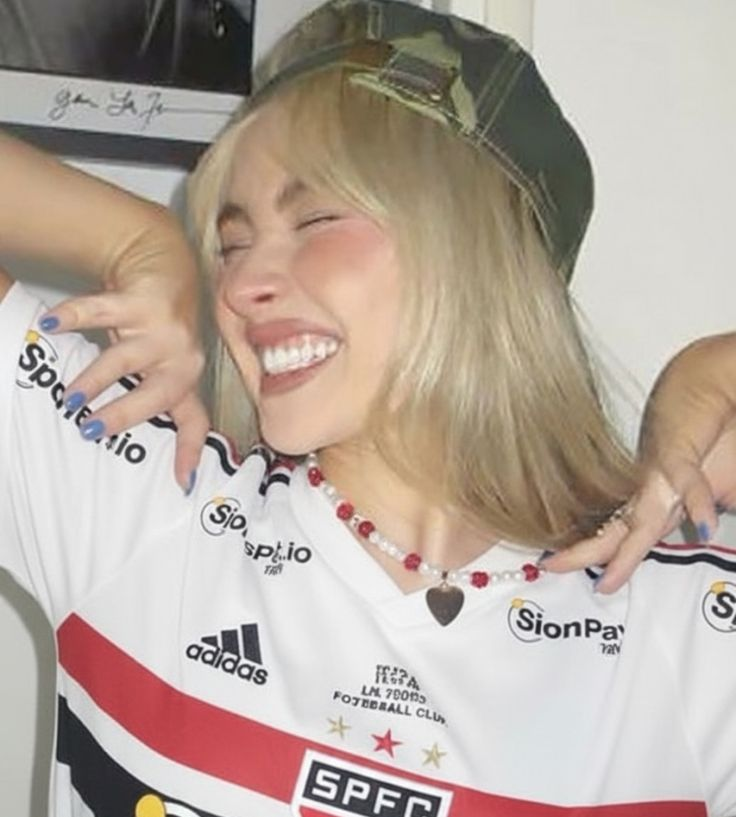
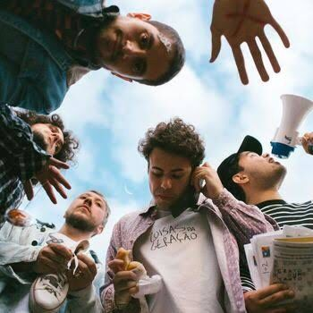

eu sei é ridiculo
Uma homenagem aos artistas que moldaram seu gosto musical — e Talvez um pouco da sua personalidade.

01 / 04
Pop · Country · Indie Folk · Synth-Pop
A mulher que transformou cada ex em álbum de ouro, cada Easter egg em profissão e cada era em uma identidade visual nova. Dezenove eras depois, ela ainda faz a internet entrar em colapso com uma simples mudança de foto de perfil.
"It's me, hi, I'm the problem, it's me."
Anti-Hero · Midnights, 2022eras / álbuns

02 / 04
Pop · Retro · Bubblegum
Curta, loira, e com mais carisma no dedo mindinho do que a maioria dos artistas inteiros. Saiu do Disney Channel decidida a provar algo, jogou o Espresso na cara do mundo e a internet não se recuperou mais.
"Please, please, please don't prove I'm right."
Please Please Please · Short n' Sweet, 2024hits que você canta no chuveiro
03 / 04
Pop · Rock · Soft Rock · Glam
Saiu do One Direction, trocou o uniforme por ternos floridos e boa-joia, lançou três álbuns solos aclamados e fez milhões de pessoas repensarem o próprio gosto musical. O cara que faz tudo na própria velocidade — e funciona.
"We don't talk about it, it's something we don't do."
Watermelon Sugar · Fine Line, 2019discografia solo

04 / 04
Pop Indie · Indie Rock Brasileiro
A banda mineira que prova que o pop brasileiro tem identidade própria — e não precisa imitar ninguém de fora pra ser excelente. Aquela música que você coloca no fone no metrô e o mundo fica instantaneamente melhor.
"Eu te amo do jeito que eu sei, do jeito que eu posso."
Do Jeito Que Eu Sei · Lagum, 2020músicas pra colocar no fone
Minha Opnião
Sabrina Carpenter
É A MAIORAL NÃO TEM JEITO
Taylor Swift
Eu sei que vc gosta muito dela
Lagum
Não Conhecia essa Banda mais como é brasileira não pode ficar em Ultimo
Harry Styles
Eu sei que vc é apaixonada nele, mas infelizmente esse cara vai se apresentar no Morumbi oq vai acabar com o Gramado